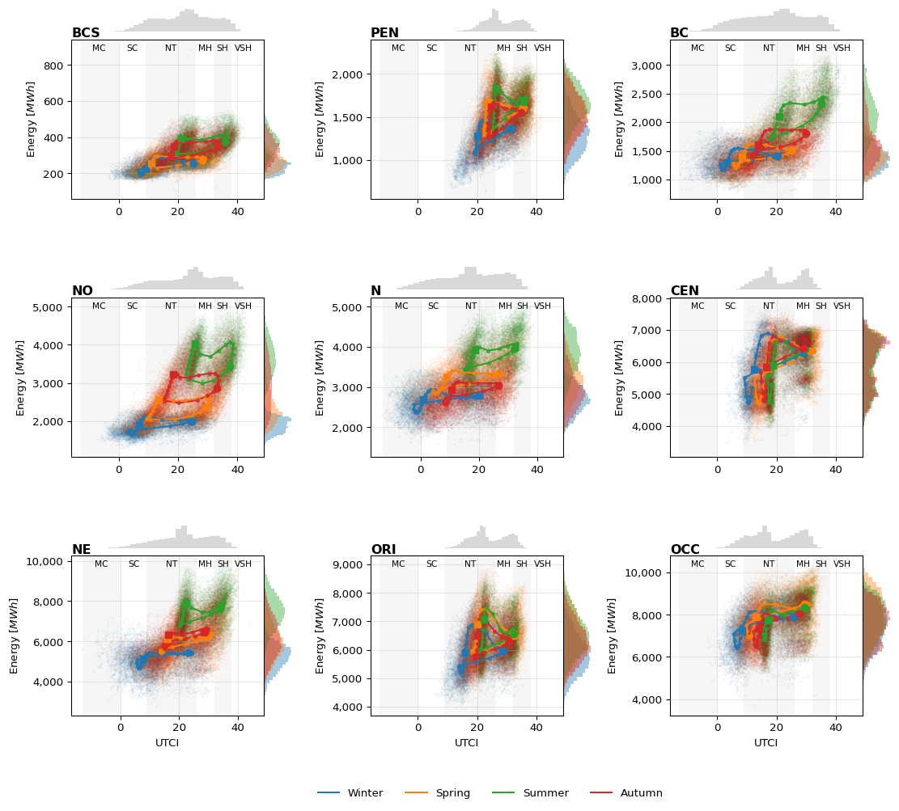

import pandas as pd
import matplotlib.pyplot as plt
from mpl_toolkits.axes_grid1 import make_axes_locatable
import matplotlib.ticker as mticker
import numpy as np
f = 'data/demanda_utci_regions.parquet'
utci = pd.read_parquet(f)
# --- 1) Define stress category abbreviations (StressCategory) ---
stress_categories = [
("MC", -13, 0), # Moderated cold
("SC", 0, 9), # Slight cold
("NT", 9, 26), # No thermal
("MH", 26, 32), # Moderated heat
("SH", 32, 38), # Strong heat
("VSH", 38, 46), # Very strong heat
#("EH", 46, np.inf), # Extreme heat (opcional)
]
# --- 2) Define seasons ---
seasons = {
'Winter': [12, 1, 2],
'Spring': [3, 4, 5],
'Summer': [6, 7, 8],
'Autumn': [9, 10, 11]
}
# --- 3) List of regions ---
regions = ['BCS', 'PEN', 'BC',
'NO', 'N', 'CEN',
'NE', 'ORI', 'OCC']
# --- 4) Prepare figure & axes ---
fig, axes = plt.subplots(
3, 3, figsize=(12, 12),
sharex=False, sharey=False,
constrained_layout=False
)
axes = axes.flatten()
# --- 5) Loop per subplot / region ---
for idx, (ax, reg) in enumerate(zip(axes, regions)):
season_colors = {}
# a) Shade UTCI stress categories (background bands)
for i, (abbr, xmin, xmax) in enumerate(stress_categories):
ax.axvspan(
xmin, xmax,
color='lightgrey' if i % 2 == 0 else 'white',
alpha=0.2, linewidth=0, zorder=0
)
# add abbreviation label inside at top
x0, x1 = ax.get_xlim()
if not np.isfinite(xmin): xmin = x0
if not np.isfinite(xmax): xmax = x1
mid = xmin + (xmax - xmin) / 2
ax.text(
mid, 0.92, abbr,
transform=ax.get_xaxis_transform(),
ha='center', va='bottom',
fontsize=8, clip_on=False, zorder=5
)
# b) Scatter + mean curves + markers
for season_name, months in seasons.items():
df_season = utci[utci.index.month.isin(months)]
# scatter raw points
ax.scatter(
df_season[f'{reg}_UTCI'],
df_season[f'{reg}_DEMANDA'],
alpha=0.055, marker='.', s=1, zorder=1
)
# compute hourly means
grp = df_season.groupby(df_season.index.hour)
x = grp[f'{reg}_UTCI'].mean()
y = grp[f'{reg}_DEMANDA'].mean()
# plot mean curve
line, = ax.plot(x, y, '-', label=season_name, zorder=2)
season_colors[season_name] = line.get_color()
# plot intermediate markers
special = {12: 'o', 23: 's'} # omitimos h=0 aquí
rest = [h for h in x.index if h not in special]
ax.scatter(
x.loc[rest], y.loc[rest],
marker='.', color=line.get_color(), alpha=0.7, zorder=3
)
# special-hour markers (sin label)
for h, m in special.items():
if h in x.index:
ax.scatter(
x.loc[h], y.loc[h],
marker=m, color=line.get_color(), s=40,
label=None,
zorder=4
)
# c) Add subplot title (region abbreviation)
ax.set_title(reg, loc='left', fontsize=12, fontweight='bold', pad=2)
# d) Y-label, grid, tick formatting, and X-label only bottom row
ax.set_ylabel("Energy $[MWh]$") # <-- unidades recuperadas
ax.grid(alpha=0.3, zorder=5)
ax.yaxis.set_major_formatter(mticker.StrMethodFormatter('{x:,.0f}'))
ax.tick_params(axis='x', labelbottom=True)
if idx // 3 == 2: # fila inferior
ax.set_xlabel("UTCI")
# --- e) Marginal histogram lateral (demanda) ---
divider = make_axes_locatable(ax)
cax = divider.append_axes("right", size="15%", pad=0)
for season_name in seasons:
df_s = utci[utci.index.month.isin(seasons[season_name])]
cax.hist(
df_s[f'{reg}_DEMANDA'],
orientation='horizontal',
bins=30, density=True,
color=season_colors[season_name],
alpha=0.4
)
cax.axis('off')
# --- f) Marginal histogram superior (UTCI ponderado por demanda) ---
top_ax = divider.append_axes("top", size="15%", pad=0.1)
s_utci = utci[f'{reg}_UTCI']
s_dem = utci[f'{reg}_DEMANDA']
mask = s_utci.notna() & s_dem.notna()
top_ax.hist(
s_utci[mask], bins=30,
weights=s_dem[mask], density=True,
color='gray', alpha=0.3
)
top_ax.set_xlim(ax.get_xlim())
top_ax.axis('off')
ax.set_zorder(top_ax.get_zorder() + 1)
# --- 6) Adjust margins and legend ---
plt.subplots_adjust(
left=0.05, right=0.93,
top=0.88, bottom=0.12,
hspace=0.35, wspace=0.35
)
handles, labels = axes[0].get_legend_handles_labels()
unique = dict(zip(labels, handles))
fig.legend(
unique.values(), unique.keys(),
loc='lower center',
ncol=len(seasons),
frameon=False,
bbox_to_anchor=(0.5, 0.02)
)
plt.show();